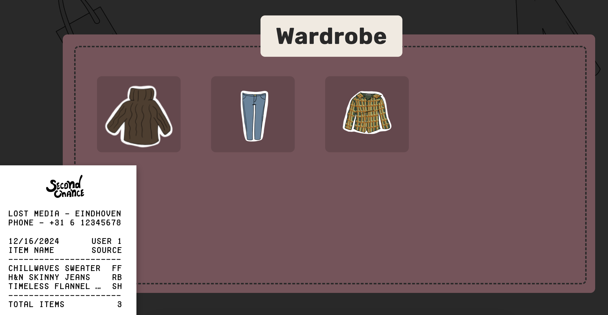
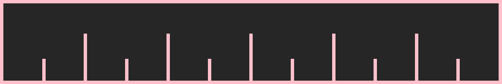
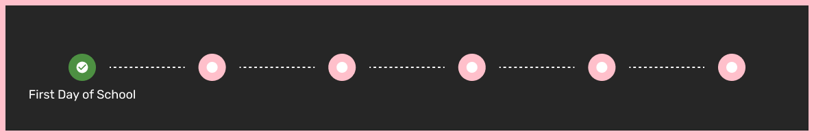

In this project we were asked to develop a campaign to spread awareness to teens about fast fashion and present these teens alternative to fast fashion.
We decided to use this method because teachers gave us a lot of information about Double Diamond, and everyone was familiar with the way Double Diamond works. The Double Diamond process consists of two diamonds. The first diamond represents Discover and Define whilst the second diamond represents Develop and Deliver.
This assignments goal is to make teens aware how bad Fast Fashion is and that there are better alternatives. This means that the target audience are teens. especially teens in The Netherlands. Using this information we later have done interviews with dutch teens which really helped us get good data to use.
Before we knew what we wanted to make we wanted to research the target audience. We have done this by asking ourself three questions and a few sub-questions. You can find these below. After we did this everyone got assigned to a different question. I got assigned to the 1.0 questions and 3.3 questions.
Before we started working on this assignment we wanted to divide the tasks using Trello. We all came together to look at our questions and divide these questions in assignments. We looked at each questions and thought about how long this will take and what CMD methods we want to use. In consultation Matheusz added everyone do an assignments with an deadline, you can see these in the Trello which is really useful.
Trello LinkBelow you can see all the research documents that we have developed as a group. For each research document there will be summary below.
Personally, I buy a lot of clothes from all kinds of different brands. I encountered a lot of clothes that are of bad quality and high quality. For example, I have a few white garments from Zara. They are the same but still fit differently and are made in different countries, on the other hand I have a few garments from Represent and these garments are of the highest quality that I know of. They are expensive costing 120 euros but lasted me for a few years already.
After everyone was done with their research we planned a meeting with our stakeholder to show our progress, find and to present our idea. Elitsa made a presentation with different keynotes we found in our research.
The stakeholder was really happy with our presentation. She loved the idea and told us that this idea was really unique. She also liked that we had done a lot of research. As feedback she told us that we have done enough research and that we should make a few concept to show her at a later date. Next up we want to make these concepts and think about our storytelling. After we are done with that we want to plan another presentation with the stakeholder to show our concepts.
In the final stage of the define phase we made our design. This design is based on a game with a timeline of events. In the intro screen you get a few messages about the project and what the goal of the game is, after that the game will start. The goal is to have enough money to buy a dress for prom. In the game you have different events that happen every x amount of days. During each event you have to wear clothes which can also break depending on the quality of the clothes.
Before we started developing the game we looked at different ways to develop the game. I looked at different game engines but that was over the top so we wanted to stick to HTML, CSS & JS. But there is a twist. All of us were really eager to learn more about React so we wanted to also build our game in React which for sure was a big challenge. We also made a GitLab repository. Here every member has their own branch that they can safely push to. Before merging changes we used WhatsApp to communicate so that we don't get any merging conflicts.
During development we chose to work with components. Components can easily be used multiple times in our project.
The first component I made was a receipt. This receipt is show on the bottom left of the page where users can quickly see their wardrobe, because the wardrobe changes often opening the wardrobe every time can get annoying.
What I did first was look at some receipts online and downloaded a free to use receipt font. Then using HTML and CSS I made a receipt with all the items in the wardrobe. Initially we liked this idea alot because it was simple and worked.
Figure 6 - Devan JanssenAfter some feedback from the target audience I chose to add 2 different wardrobes that I can further test.
Concept 1 can be found here. When the user clicks on the item in the receipt a small window will open with a image and more information about the item.
Figure 7 - Devan JanssenConcept 2 can be found here. When the user clicks on the receipt a wardrobe will open with all items.
Figure 8 - Devan JanssenI asked five people from the target audience to test the first concept. I asked them if it was clear that the receipt was openable, and that you can click on items to get more information. Most of them opened the receipt by accident, and did not know you could click on the items in the receipt. I would had to make them aware. After I told them how they could see more information, some of them found it usefull whiles two people found it weird and out of place.
I also asked five other people to test the second concept. Here we had the same outcome as the first concept. The users did not know that you can click on the receipt. But when i explained that you can all of them loved the idea of a wardrobe. Just needed a better style.
To conclude my testing i have chosen to stick with the wardrobe and make it look more appealing.
Finally I put all the feedback and testing together and made this design you can see in Figure 9. When hovering over an item more information about the item will be shown. You can also wear items which I will explain later. Plamena added a header on top of the wardrobe.
 Figure 9 - Devan & PlamenaI first designed the timeline in Figure 10. It is based on a timeline where the game cycles trough main events and secondary events. We all liked this idea because after events have ended screens will be shown with outcomes and days passed. However the design did not fit with our overall game design.
 Figure 10 - Devan JanssenBecause Figure 10 was not good enough I tried to do a different approach. Here I found out it might be smart to add dynamic events that turn green when an event is completed. I quickly asked the target audience and they all liked this. Meaning this is the timeline we will use. You can see this iteration in Figure 11
 Figure 11 - Devan JanssenI made a timeline (Figure 12) where the user can easily see how many events are completed and how many events are left. I did this by using a react.map function which checks for how many events are in the json file. For each event it generates a circle that you can see below. In between each event a line will be generated to show progress between the events. If the event index is active it will also change the color to green and show a check to better visualize.
We also have different events. Each event has a different image which will be shown as a card. When hovering over the card more information about the event will be shown. All events have a 'wear from closet' and 'buy from store' button. When pressed on the button the gamePhase will be updated which I will explain later.
The store has three items that can be bought. We first had a dynamic store where the items are based on the index in the JSON file, but after some feedback we decided to make a static store with three items based on the eventIndex. This means that for specific events we can show specific items.
When hovering over a item more information is shown about the item. You can see how this works in Figure 14.
Here I will explain the game's logic.
When the gamePhase is 1 the event will be shown based on the eventIndex. As explain earlier all events have buttons that needed functions. You can see these functions in Figure 15. When the user open the wardrobe the wardrobe is shown and the event is hidden. When the user wants to buy something from the store the gamePhase will be set to 2.
When the gamePhase is 2 the store will be shown. Each store has different items based on the eventIndex. When a item is purchased from the store it will be added to the wardrobe, the outcome will be set and the gamePhase will be set to 3. You can see this working in Figure 16.
When the gamePhase is 3 the outcome will be shown based on the item purchased. When the user clicks on the continue button the gamePhase will be set to 4. This can be seen in Figure 17.
When the gamePhase is set to 4 a message will be shown with 'x' amount of days has been passed. This demonstrated that between each days a different amount of days have been passed to better simulate a schoolyear. Also after 'x' amount of days has passed the user will get 'x' amount of euros from their Caretakers. When the user clicks on the continue button the gamePhase will be set to 1 again and the cycles starts over with the next eventIndex (event 2). As shown in Figure 18.
To upload our game to Hera I used the 'npm run build' command in the terminal. This command makes a 'dist' folder. The 'dist' folder is a simplified version of our game meaning everything still works but we only have a single html, js and css file. I then uploaded the 'dist' folder to Hera and the game was ready to be tested.
When our project was finally done we held a presentation for our stakeholder, teachers & students. In this presentation we talked about our journey during this project. We also showed what our game is about, the game phases and how our game is played in general.
Our stakeholder loved our game and was really pleased with the design, As feedback we heard that we have to polish a few things for example the budget & item prices. Also some outcomes did not fit the bought item.
Our client (Night of The Nerds) hosts a special event each year. During this event we can show our project, which is perfect for us and also perfect for the client. We have a lot of future plans that I can talk about.
As stated before we got a lot of feedback during our presentation. Below you can find our Advice Report. In here you will find our future plans & struggles.